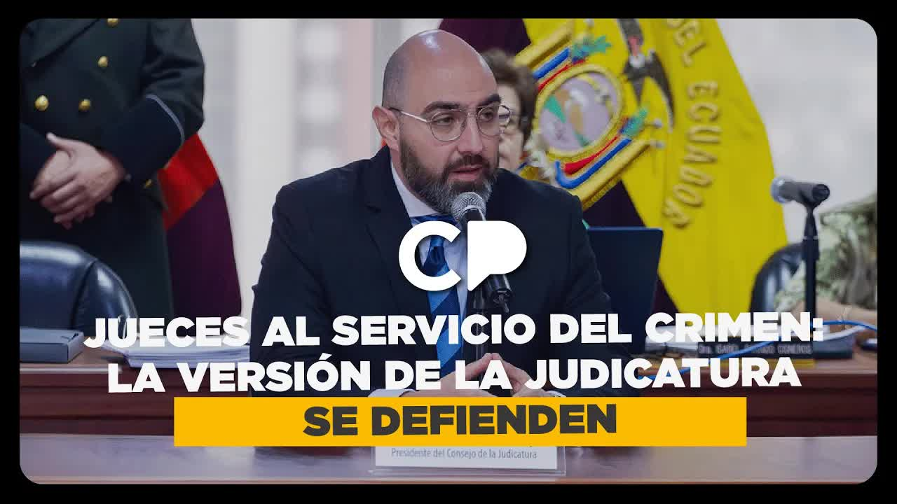
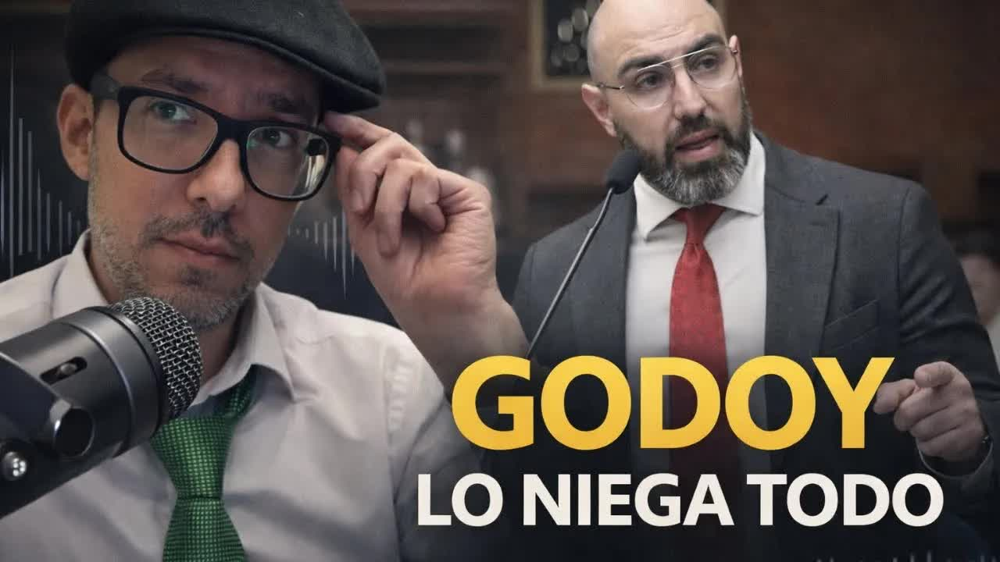
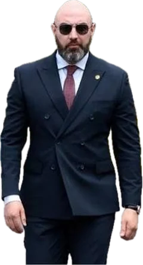
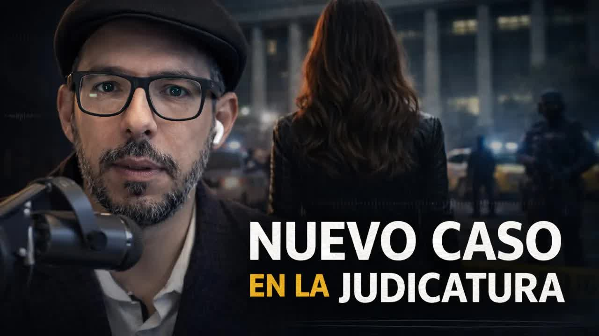
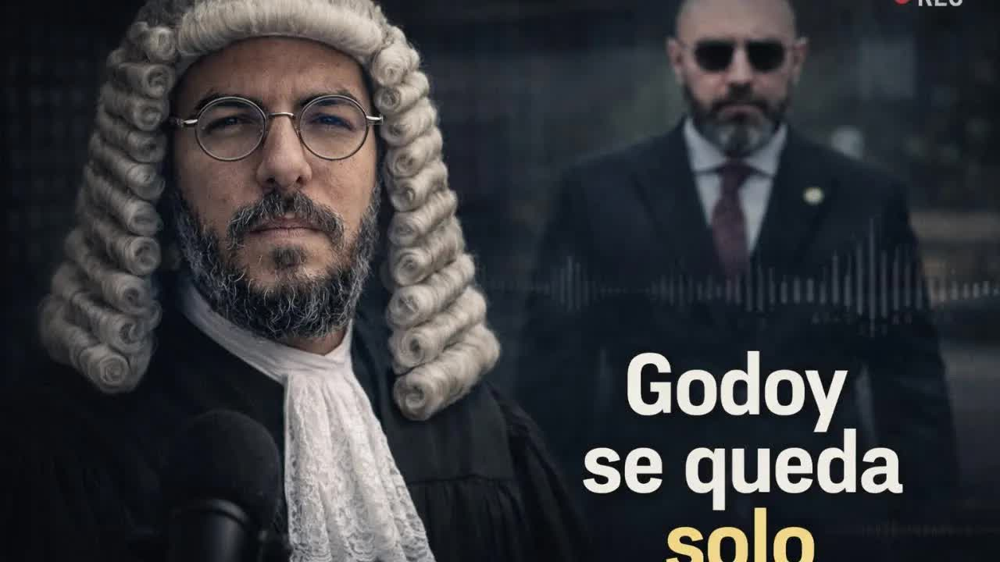
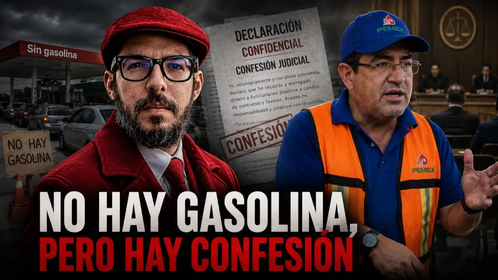
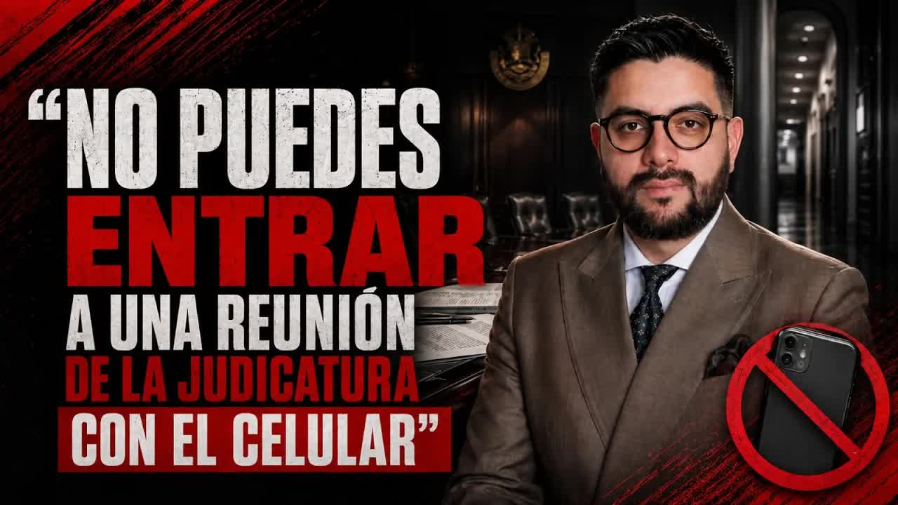

Jun 23, 2025 · Background: Godoy on Café la Posta
On November 10, 2025, the Pichincha provincial director of the Judiciary Council, Henry Gaibor, summoned anti-corruption judge Carlos Serrano to his office and asked him to pay 'a little more attention to the defense' of Jezdimir Srdan, a Serbian drug trafficker accused of money laundering who had been a client of the wife of the Judiciary Council's president. The judge recorded it. Ten days later he convicted Srdan, who drew a finger across his throat. The state withdrew the judge's security detail. On December 22, Andersson Boscán published the recordings. Sixty-four days after the first column, the National Assembly censured and removed Mario Godoy with 148 votes and none against.
 Removed from office · 148 votes
Removed from office · 148 votes
Everything that follows rests on one piece of evidence: the recordings in which the right-hand man of the president of the Judiciary Council asks an anti-corruption judge for 'a little more attention to the defense' of a Serbian drug trafficker. It wasn't someone's account or a hallway leak. It was a recording, and Andersson Boscán transcribed it and published it on December 22, 2025, on the first show he did outside La Posta. What it captured is that the Judiciary Council, the body that governs the justice system fighting organized crime, was applying pressure on behalf of drug trafficking. Sixty-four days after the first column on the case, the National Assembly censured and removed Mario Godoy with 148 votes and none against. To measure the weight of those recordings, you have to start eleven years earlier.
Eleven years ago, Ecuadorian police found a Serbian man with 153 kilos of cocaine, three sacks' worth of cement. His name is Jezdimir Srdan, he belongs to the Balkan mafia, a partner of the Albanian mafia in Ecuador, and he had already slipped through the Peruvian justice system twice: the first time because they had no one to translate. In Ecuador, a judge sentenced him in 2014 to 17 years in prison. He didn't serve them. On May 9, 2019, Judge Jorge Alexander Martínez Olivares applied a theory of his own: since the new law set the minimum sentence at 10 years rather than 17, he cut the sentence by 42 percent; since Srdan had been in prison for four years and three months, 43 percent, he signed off on 'extinction of the sentence by completion.' He served four years out of seventeen. In Ecuador nobody reported it; the Serbian press did, when it saw him operating again in Europe.
Judge Martínez Olivares was removed months later. Prosecutor Yanina Villagómez, of Guayas, issued a decision not to prosecute: she found no crime. In March 2023, through a personnel action signed by the acting provincial director for Guayas, María Fabiola Gallardo, he was reinstated as a judge at the North 2 Criminal Court Unit in Guayaquil. German police, meanwhile, had broken into Sky, the app used by the Albanians and many drug traffickers in Ecuador, and found Srdan: the man who once moved 153 kilos was now moving ten tons and had funneled nearly 11 million dollars into the Ecuadorian banking system. No one ever said which bank. The Germans applied pressure and Ecuador had to act: Srdan was arrested again and faced two cases, drug trafficking and money laundering.
The stage was already set. In June 2025, on Café la Posta, Boscán had begun putting faces to the judges who were freeing organized crime figures, and he interviewed the president of the Judiciary Council, Mario Godoy, on the same day news broke that alias Fede had escaped from the Penitenciaría prison dressed as a soldier. Godoy spoke of a 'false esprit de corps' among judges, of 93 officials sanctioned and 48 judges removed, of a judicial state of emergency, and denied persecuting Judge Nubia Vera, who had accused him of handing her the ruling in the Verónica Abad case on a USB drive. Vera had given three names on air: Mario Godoy, Henry Gaibor and Jorge Carrillo. Boscán memorized them.

Judge Carlos Serrano, of the Pichincha Anti-Corruption Unit, had a rough November. On the 6th, a bomb went off outside the offices of the anti-corruption judges; the news went largely unnoticed. Then the calls began. The caller was Henry Gaibor, Pichincha provincial director of the Judiciary Council and Godoy's right-hand man: if a judge gets a call from Gaibor or from Carrillo, he knows it's someone calling on behalf of the Judiciary Council's president. Gaibor wanted to talk. Serrano told him that if it was about a judicial matter, he didn't feel comfortable. 'It's nothing bad, it's something good,' 'it has to be in person.' The meeting took place on November 10, 2025, ten days before Jezdimir Srdan's hearing. Serrano recorded it. Boscán personally transcribed the recordings and published them on December 22, on the first show he did outside La Posta, with about 10,000 people watching live.
I told them: give me the number, more practical. Say: it's the Serbian's. [...] The request as such they didn't tell me like that, bold. That you pay attention to it, that it's a very particular defense, but that this person could inform on who would have contaminated.
Henry Gaibor to Judge Carlos Serrano, November 10, 2025, according to the recording published by Andersson Boscán
I'm just passing along the message. [...] They told me: please, it's a very particular case, I think they caught him for drug trafficking or for money laundering. [...] Just that you pay a little attention to the matter, nothing more. They told me a little more attention to the defense they would have presented along those lines.
Henry Gaibor to Judge Carlos Serrano, November 10, 2025. Serrano replies: 'I understand, doctor. Whatever has to be decided, doctor'
You had to go to the case file to understand what defense that was. Srdan had two cases. In the drug trafficking case, he admitted to being a narco. In the laundering case, his defense argued that the money in Ecuador was legitimate: a shrimp farm owned in partnership with his wife, 4.5 million dollars, 89 hectares. He was seeking acquittal so the seized assets would not be taken from him. Gaibor didn't say acquit him: he said to look at the defense's arguments, and the defense was asking for acquittal. When Serrano stopped answering, Gaibor used the judge's administrative supervisor, Sofía Carrillo, coordinator of the Anti-Corruption Unit, who was also recorded.
Doc, the director is asking me if you're around, if you're free now, if you can come up for a moment. [...] Forgive me for insisting, forgive me, it's not me. He says he won't take more than three minutes of your time. [...] I just don't know what to tell him.
Sofía Carrillo to Judge Serrano, November 2025. Serrano: 'Tell him no. I have to get a ruling out and my colleagues already want to kill me if I don't'
On November 20, the court ruled. Serrano and Judge Fierro voted to convict Srdan of money laundering; Judge Gabriela Lara voted to acquit him. On hearing the verdict, Srdan drew a finger across his throat in front of the judges, a gesture captured on the hearing's recording. Serrano reported the threat. The state's response was to take away the two police officers guarding him. The Judiciary Council later assigned him to the panel in the Triple A case against the mayor of Guayaquil, which was scheduled to sit on December 24 and which nobody wanted to take. Serrano resigned; Godoy would not accept his resignation until he put his decision in that case in writing. On December 17, Felipe Rodríguez, a lawyer and columnist for Primicias, published 'The brave stand alone' and reported that an anti-corruption judge was being pressured. On the Thursday before publication, Boscán told Godoy he had material, and they agreed on an interview for Monday the 22nd; on Sunday it was canceled. Before the show, Boscán wrote to Gaibor. The reply: 'There has been no pressure whatsoever from any point of view.'
This is the first time you will see how the system works. A rotten system that shows us, through this story, how the guts of narco-justice work in Ecuador.
Andersson Boscán, December 22, 2025
The show ended with Godoy's wife. María Dolores Vintimilla, a criminal lawyer, married the president of the Judiciary Council in October 2024 and withdrew from all her cases a month later, including the criminal defense of Jezdimir Srdan, which Diego Chimbo took over. She kept receiving notifications from the case for almost a year; she said it was a mistake. Boscán checked the court system: she had also defended Adolfo Macías Villamar, alias Fito, and Jorge Luis Zambrano, alias Rasquiña, the leader of Los Choneros, not on drug trafficking charges, when she worked as an employee of a law firm. That same day the National Assembly, in a session called by Niels Olsen, voted unanimously to summon Godoy. Godoy had come to the Judiciary Council as the first choice on the shortlist submitted by the president of the National Court of Justice, José Suing, with votes from Noboa's and Correa's blocs on the Council for Citizen Participation.
On December 23, the full Judiciary Council met in the morning. It decided to refer the facts to the Attorney General's Office through a notitia criminis, which Boscán called the cowards' complaint, asked for Henry Gaibor's resignation and approved Godoy's leave so he could prepare his appearance before the Assembly. Council members Alfredo Cuadros, Fabián Fabara, Damián Larco and Magali Ruiz signed; they did not ask Godoy for a single explanation. Gaibor submitted his irrevocable resignation along with a statement about Pichincha's budget execution, which had gone from 30 to 98 percent. Godoy, at the council session, announced that he had information that 'is going to shake up a lot of things' and that he was not in Bogotá. That night he spoke with Fabricio Vela on Revelaciones.
The recordings, if you sit down and analyze them, in certain parts are basically inaudible. [...] In the recordings, at least I personally, can't quite make out what the connection is. [...] I rule it out completely, because that is precisely the narrative they want to establish: she's the president's wife, a case of a supposedly pressured judge, so free the drug trafficker. There was no pressure whatsoever.
Mario Godoy to Fabricio Vela, Revelaciones, December 22, 2025
Godoy also said the recordings were already part of a preliminary investigation by the Attorney General's Office and that he therefore could not talk about them. He never said whether he recognized Gaibor's voice, whether he sent him or who above him could have sent him. In January, on a radio show, he was asked whether he had spoken with his director: 'The only contact I had was immediately afterward, to find out. He told me about some situation he had to discuss with me in person.' Sources close to Gaibor told Boscán that he wanted to leave the country and was told to calm down, that this would blow over. Felipe Rodríguez, on Teleamazonas, summed up the political argument: a lawyer can defend drug traffickers, but someone with family ties to those defenses cannot run the body that governs the justice system fighting organized crime. That is called a conflict of interest.

The appearance came on January 5, 2026, three weeks later, because the Assembly decided to go on vacation first. Godoy waited three hours: assembly member Lucía Jaramillo, of ADN, changed the agenda of the special session to debate the capture of Nicolás Maduro. When he spoke, he said the president of the Judiciary Council does not appoint or remove judges, and then that they wanted to bring him down to leave cases unresolved. He named Pablo Encalada, Darwin Andrade, Gabriela Panchana, Katrina Tala, Diego Ordóñez, Lasso, Correa, Felipe Rodríguez and Boscán; he spoke of a messenger sent by Aquiles Álvarez who had supposedly warned him that the media storm would be 'unstoppable and unsustainable.' He did not spend ten minutes on Gaibor. Niels Olsen did not allow questions. Daniel Noboa had publicly advised him to resign.
I appreciate the recommendation President Daniel Noboa has given me, I will consider it, but at this moment, after the attack I have suffered, I want to ask that within the impeachment trial procedure I be allowed to appear before the Oversight Committee to defend my honor. [...] I hold Mr. Aquiles Álvarez and the RC caucus and all the other media actors responsible. You are today responsible for whatever may happen to me and my family.
Mario Godoy before the National Assembly, January 5, 2026
Boscán answered him on air with the questions that went unanswered. If Gaibor said he was acting on someone's behalf, there were three possibilities: Gaibor made it up, in which case he should be in prison; Godoy, the only superior of the Pichincha director, sent him; or someone with more power than the president of the Judiciary Council sent him. The pressure on Judge Serrano was not in Srdan's drug trafficking case but in the laundering case, the same one in which Godoy acknowledged his wife had been the lawyer. The government, according to Boscán's sources, regarded Godoy as indefensible, but would not let him fall because his legal replacement, Alexandra Villacís, second on Suing's shortlist, was not to its liking: it wanted Damián Larco. Godoy had verbally offered his resignation on January 5, and the executive branch asked him to hold out through the impeachment trial to buy time.
On January 6, Boscán opened the show with a story he had waited weeks to publish. On Tuesday, October 22, 2025, in Orellana, at a red light, a hitman aimed at the head of Samantha Lozada, the Judiciary Council's provincial director there. The gun jammed, several times. He tried with her father, who was driving, and again the bullet didn't fire. When the light changed, he fired eight times at the car; no one died. Lozada had said in front of her colleagues, at a meeting of provincial directors with Godoy, that it was impossible to work with prosecutors and judges who served drug trafficking. Godoy asked her to send it to him in writing. On June 21, 2025, she sent to his personal email, and by WhatsApp to adviser Jorge Carrillo, four pages with names, ID numbers and case numbers: a prosecutor linked to Los Choneros, a prosecutor's assistant who lived with a hitman, a court clerk accused of selling constitutional rulings, a notary, and Judge Walter Pío Arriaga, who had annulled the case against alias Topo, the number two of Los Choneros. No one acted on it.
The threat against her came from alias Topo, through his brother: they handed her a phone in a restaurant and told her she would be killed that night, and if not, her family one by one, and that the prosecutor was going to help. She was moved from Orellana to Quito with a single police officer; the Interior Ministry asked the Judiciary Council for travel expenses and an armored car, and the Judiciary Council did not pay, arguing that the Comptroller General's Office would come after them. On October 21 she called the provincial prosecutor to ask why he had not appealed the annulment of a case against a notary tied to the narcos she had reported, and she notified the Transparency Directorate. The next day she was shot at. On October 30, eight days later, the full council accepted her resignation through resolution 85-2025, signed by Godoy, Magali Ruiz and Alfredo Cuadros: it was the pro forma resignation Godoy had requested from all provincial directors on September 24. No post, no protection. She left the country on January 1, 2026, granted asylum.
I would have wanted him to act with me the way he acted with Gaibor.
Samantha Lozada, interviewed by Andersson Boscán, January 6, 2026
Godoy said on a radio show that he had taken 'all the administrative actions,' that there had been coordination with the Interior and Defense ministries, that he granted her remote work and that she came in to hand over her resignation in person. On the email, he said he had carried out a 'preliminary review' and that the prosecutor she reported was no longer in office. The Judiciary Council issued a statement: there were no official complaints before the Transparency Directorate, Godoy's supposed visit to Orellana was false and the resignation had been verbal. It sent Boscán a request for a correction. Boscán put the email and the chat with Carrillo on screen. Lozada, from asylum, said her mother had received word that they already knew which country she was in, and that she slept with a chair wedged against the door.
On January 27, 2026, Godoy was left alone. Seventy lawyers, former judges, former prosecutors and at least five bar associations sent a letter to the National Assembly asking it not to delay the trial: Ramiro Ávila Santamaría, Diego Ordóñez, Pablo Encalada, Silvia Buendía, Juan Pablo Albán, María Dolores Miño, Jorge Luis Mazón, María Josefa Coronel, among others who agree on almost nothing. The National Court of Justice removed José Suing from its presidency for having put Godoy on the shortlist. His successor, Marco Rodríguez, said on Teleamazonas that the principle of trust between the president of the Judiciary Council and the judicial branch had been broken, that he did not know Godoy and that he would not have put him on the shortlist. In Godoy's circle, administrative director Gallo, accused by a supplier of demanding a 14 percent kickback, and Roger Tumali, accused of harassment, were falling; all their resignations were accepted. On February 9, Fabricio Vela, who had interviewed him twice, told Boscán that the best thing would be for him to step aside, and that no one had answered whether Godoy's marital estate had benefited from the fees Srdan paid his wife.
Srdan is caught with 153 kilos and sentenced to 17 years. Judge Jorge Alexander Martínez Olivares cuts the sentence to 10 years, calculates that he has already served 43 percent and signs 'extinction of the sentence by completion.' The judge was removed, prosecutors declined to charge him, and in March 2023 he was reinstated to a criminal court unit in Guayaquil.
Gaibor repeatedly summons Judge Carlos Serrano and talks to him about the case 'of the Serbian': 'they told me a little more attention to the defense.' He then uses the coordinator of the Anti-Corruption Unit to ask for a second meeting. Serrano records everything.
The court convicts Srdan of money laundering with the votes of Serrano and Judge Fierro; Judge Gabriela Lara votes against. Srdan draws a finger across his throat in front of the judges. Serrano reports the threat; the state withdraws his two police escorts.
Felipe Rodríguez publishes 'The brave stand alone.' Godoy cancels the interview agreed with Boscán. On Monday the 22nd, the recordings come out with Gaibor's name and the story of Godoy's wife, lawyer for Srdan, alias Fito and Rasquiña. The Assembly unanimously summons him.
The council asks for Gaibor's resignation, sends a notitia criminis to the Attorney General's Office and approves Godoy's leave. Gaibor resigns, talking about budget execution. Godoy, with Fabricio Vela: the recordings are inaudible and there was no pressure.
A three-hour wait while ADN debates Maduro. Godoy blames Aquiles Álvarez, Correa's movement and the press, thanks the president for his recommendation to resign and does not accept it. Boscán publishes the case of Samantha Lozada: eight shots on October 22 and removed eight days later.
Seventy lawyers, former judges and five bar associations ask the Assembly not to delay the trial. The National Court removes José Suing, who shortlisted him; the new president, Marco Rodríguez, says the principle of trust was broken and that he would not have put him on the shortlist.
Godoy resigns on Twitter half an hour before the session and does not attend. 148 votes in favor, none against, one abstention: censured and removed for manifest ineffectiveness. Damián Larco takes charge of the Judiciary Council.

On Wednesday, February 18, 2026, Mario Godoy resigned on Twitter half an hour before the session of his impeachment trial and did not show up to defend himself. The Assembly went ahead: the official bringing the impeachment, Viviana Veloz of Revolución Ciudadana, who as president of the legislature had sworn him in in 2024; the motion by Ana Belén Tapia, of ADN. The Legislative Administration Council had approved the trial, and the Oversight Committee processed it in three days and recommended proceeding. The vote: 149 present, 148 in favor, none against, one abstention, by Yajaira Urresta. Censured and removed for manifest ineffectiveness in the performance of his duties, Article 255, paragraph 3, of the Organic Code of the Judicial Branch. It required a qualified majority in an Assembly split down the middle; it got one. The vote map was painted green with a single blue dot. Damián Larco, a former executive branch official, took charge of the Judiciary Council; Alexandra Villacís, the alternate on the shortlist, was passed over.
Godoy resigns not because he has dignity, but because he had no options. Those are different things. People who have dignity choose a path when they could choose others.
Andersson Boscán, February 19, 2026
Mario Godoy resigns on Twitter half an hour before the session of his impeachment trial and does not show up to defend himself.
Mario GodoyThe Legislative Administration Council had approved the trial; the Oversight Committee processed it in three days and recommended proceeding.
Oversight CommitteeViviana Veloz, of Revolución Ciudadana, who as president of the legislature had sworn him in in 2024, makes the case for impeachment and asks for a round of applause for Judge Carlos Serrano. The ruling party does not applaud.
Viviana Veloz · Revolución CiudadanaAna Belén Tapia, of ADN, presents the motion: censure and removal for manifest ineffectiveness in the performance of his duties, Article 255, paragraph 3, of the Organic Code of the Judicial Branch. A qualified majority is needed in an Assembly split down the middle.
Ana Belén Tapia · ADN149 present. A single abstention, by Yajaira Urresta. The vote map is painted green with a single blue dot.
Censured and removed. Damián Larco, a former executive branch official, takes charge of the Judiciary Council; Alexandra Villacís, the alternate on the shortlist, is passed over.
Full National AssemblyI told them: give me the number, more practical. Say: it's the Serbian's. [...] The request as such they didn't tell me like that, bold. That you pay attention to it, that it's a very particular defense, but that this person could inform on who would have contaminated.
Henry Gaibor to Judge Carlos Serrano
I'm just passing along the message. [...] They told me: please, it's a very particular case, I think they caught him for drug trafficking or for money laundering. [...] Just that you pay a little attention to the matter, nothing more. They told me a little more attention to the defense they would have presented along those lines.
Serrano replies: 'I understand, doctor. Whatever has to be decided, doctor.'
Henry Gaibor to Judge Carlos Serrano
Doc, the director is asking me if you're around, if you're free now, if you can come up for a moment. [...] Forgive me for insisting, forgive me, it's not me. He says he won't take more than three minutes of your time. [...] I just don't know what to tell him.
Serrano replies: 'Tell him no. I have to get a ruling out and my colleagues already want to kill me if I don't.'
Sofía Carrillo, coordinator of the Anti-Corruption Unit, to Judge Serrano
This is the first time you will see how the system works. A rotten system that shows us, through this story, how the guts of narco-justice work in Ecuador.
Andersson Boscán, on publishing the recordings
Veloz asked for a round of applause for Judge Carlos Serrano; the ruling party did not applaud. Serrano wrote that morning that his story had come to light on December 17, 2025, in Felipe Rodríguez's column, with a question: are the brave still alone? Sixty-four days later, he was certain that judges who report pressure will no longer be alone. Samantha Lozada wrote from asylum that nothing gave her more peace than the truth and time putting everything in its place, and that they had been robbed not only of their careers but of the chance to be with their loved ones. Both remain outside the country. Henry Gaibor is in Ecuador. Godoy, who in June 2025 had said he would stay on 'until the last day,' left through the back door with a preliminary investigation open at the Attorney General's Office, based on the notitia criminis his own council had sent.
Today, 64 days later, I am certain that judges who decide to report pressure and the lack of protection will no longer be alone.
Carlos Serrano, February 19, 2026, read on air by Andersson Boscán
The post-Godoy Judiciary Council did not escape scrutiny. On May 12, 2026, Boscán reported, based on two sources present at the expanded testimony of Santiago Díaz, the former Correísta operative sentenced to 29 years for raping a minor, that Díaz had accused council member Magali Ruiz, who is close to Diana Salazar, before the Attorney General's Office of being one of the sources leaking confidential prosecutorial information to him and to Andrés Arauz; and that when he offered information to Wilson Toainga and to Ruiz in July 2025, he was transferred and held incommunicado. Ruiz had signed Godoy's leave and Lozada's dismissal. On September 3, 2026, in an interview with Boscán, Carlos Serrano described what meetings with senior Judiciary Council officials are like: there is a little basket at reception where you have to leave your phone before going in. 'Like the narcos,' Boscán told him. It was the first time, they agreed, that a judicial official had to be defended from outside the justice system.
Strangely, when you go into a meeting with a senior official of the Judiciary Council, they ask you to leave your phone outside. There's a little basket right at reception. [...] What's the danger of someone recording that meeting?
Carlos Serrano, interviewed by Andersson Boscán, September 3, 2026
The censure came from the recordings. Without that recording there would have been no impeachment trial: the Assembly voted 148 to zero on the material Boscán & La Moni published and transcribed on air, proof that the Judiciary Council was applying pressure on behalf of drug trafficking. The two officials who blew the whistle from inside, Judge Carlos Serrano and provincial director Samantha Lozada, remain outside the country. Henry Gaibor, the man who delivered the message, is still in Ecuador, with a preliminary investigation opened from the notitia criminis and without a single signed complaint from the council that let him go.
Updated September 5, 2026
153 kilos of cocaine. Sentenced to 17 years.
Judge Martínez Olivares frees him after four years and three months. The judge was later removed; prosecutors did not charge him.
Martínez Olivares is reinstated to the North 2 Criminal Court Unit in Guayaquil.
Samantha Lozada sends Godoy and Carrillo the names of judges and prosecutors working for the narcos.
Talks about the false esprit de corps and denies persecuting Nubia Vera. 'I will stay on until the last day.'
The hitman's gun jams in front of Lozada and her father.
The council accepts the resignation Lozada submitted in September. She loses her protection.
It goes off outside the anti-corruption judges' unit.
'A little more attention to the defense' of the Serbian. Judge Serrano records it.
Srdan convicted of laundering; he draws a finger across his throat. Serrano loses his escort.
Column by Felipe Rodríguez in Primicias.
Boscán publishes the recordings, Gaibor's name and the cases defended by Godoy's wife. The Assembly unanimously summons him.
Notitia criminis to the Attorney General's Office. Godoy to Vela: the recordings are inaudible.
A three-hour wait. Godoy blames Aquiles Álvarez and Correa's movement; he doesn't talk about Gaibor. Noboa had advised him to resign.
From asylum. The Judiciary Council demands a correction; Boscán shows the email.
Letter from 70 lawyers and bar associations. The National Court removes Suing; Marco Rodríguez speaks of broken trust.
Resignation on Twitter half an hour before. 148 votes, none against.
Santiago Díaz accuses council member Magali Ruiz of leaking information from the Attorney General's Office to Correa's movement.
Serrano describes how you enter a meeting with the Judiciary Council's leadership.
President of the Judiciary Council.
Pichincha provincial director, Godoy's right-hand man.
Anti-corruption judge who recorded the meeting and handed down the conviction.
Serbian drug trafficker, Balkan mafia.
Godoy's wife; lawyer for Srdan, Fito and Rasquiña.
Judiciary Council provincial director in Orellana.
Godoy's adviser.
Coordinator of the Anti-Corruption Unit.
Judge on Srdan's panel.
Judge who freed Srdan in 2019.
Council member; signed Godoy's leave.
Council member; signed Godoy's leave and Lozada's dismissal.
Lawyer and columnist for Primicias.
By WhatsApp to Boscán, before publication: 'There has been no pressure whatsoever from any point of view.' His communications team offered an interview that never happened. He resigned claiming he had raised budget execution from 30 to 98 percent; he did not apologize.
Judges' security is not the council's responsibility; he was informed on December 3 and on the 8th he processed a new request. The recordings are inaudible, show no pressure and are part of a preliminary investigation. His wife did not defend Srdan on drug trafficking charges. It is all a narrative by Aquiles Álvarez, Correa's movement and Lasso's supporters to take over the justice system. He had only one contact with Gaibor, 'to find out.' In the Lozada case he took all the administrative actions, and she handed over her resignation in person.
Acted 'immediately' with a notitia criminis and asked for Gaibor's resignation. On Lozada: it arranged timely measures, there are no official complaints before the Transparency Directorate, Godoy's supposed visit to Orellana is false and the resignation was verbal. It asked Boscán for a correction.
She withdrew from Srdan's defense in November 2024; continuing to receive notifications was a system error, and she is not answerable for a case she no longer handles.
He had the backing of the full Court; if the full Court considered that he could not continue, he would step aside. He knew of no pact to take over the Judiciary Council. He was removed weeks later.




in the morning to a free Zumba Fitness class. Get going, put on your workout clothes and head out Saturday morning to Plaza Coral Tumbaco to shake your bones with one of the trainers [ __ ] from Fip. On behalf of Daniel Novoa, María José Pinto, Viña Balbonesi, Inés Manzano, Anabela Sin thanks Paola Cabezas. So you, my friend from La Floresta, I'm going to explain to you what 25,000 barrels of cru…
Read the full transcriptEcuador they take him to trial and then a judge comes along after a trial in which he hears the police, the investigations and everything else and bam, he slaps him with 17 years, 17 years in prison. You say, "Well, Ecuador works. This is 2014, sentenced to 17 years in prison for drug trafficking." But Jordán isn't going to spend 17 years in prison because he's in Ecuador, not Switzerland. And there will be a judge, there will be a judge in Ecuador, the …
Read the full transcriptpublic that it was a complicated day for Dr. Mario Godoy, it was a complicated day for the Judiciary Council in general, for the justice system in general, uh, and there are no definitions. I think yesterday some things became clear, many others were left in doubt. And today maybe we sit down for a little while to see what happened with one thing and another. I'm pleased to have information about uh some of the things uh and I don't bel…
Read the full transcripta tiny little item would have come out in some newspaper, even a local or provincial one, or something national would have come out, uh, but saying something like another official murdered, another isolated case, more irresponsible tragedies. The scene is not fictional. What I'm telling you happened on a Tuesday morning, October 22, 2025, and it was in Orellana, Ecuador. It was at a red light and it happened to Samantha…
Read the full transcriptto talk. I already have in the waiting room of this broadcast a person who yesterday reached public attention, not for the right reasons or reasons that uh anyone would find pleasant. I'm talking about Samantha Losada. Yesterday I told you the story of a Judiciary Council official who survived absolutely miraculously, miraculously, a hitman attack and and this person worked for the Counc…
Read the full transcriptaccept it, you're going to hear it anyway. It's boscan and you're going to hear it. Good morning, good morning, good morning. Welcome, everyone. How are you? So glad to have you here. It's Tuesday, it's January 27, the first month of the year is almost over. I'm wrecked today, long early morning, 3 a.m., Moni there taking the temperature uh of the girls who've had some virus for a few days and I think I'm also sweet for all…
Read the full transcriptindefinite. I think for assembly members and I think for council members there has to be indefinite re-election. I no longer agree that running should be indefinite for president, vice president or for mayor and super-prefect, because they handle the resources and they handle the power in that case. But for legislators, why? Because the legislature is a career. That the learning curve you can't cut it off at the second ter…
Read the full transcriptyesterday. Ah, you're going to hear me complain because I'm a world champion at complaining, but here I am with my little cup of Canadian coffee, uh, which by the way I had never used on the show, I think. And well, good morning. Let's see, it's a hectic day in the news. Yesterday Mario Godoy fell. The fall of Mario Godoy took place in the Parliament of the Republic, even though specifically it it happened a few minutes before…
Read the full transcriptfrom Puerto Bolívar for Alexandra coming in and liking, says Magali Poso. I just remembered, I still have like 40 calls backed up. We're going to catch up probably between today and tomorrow. Thank you, Magali, for uh your message. Greetings from Madrid. Wake up already. Madrid, that's the place where you have to where you have to be. With this city. Very good morning. Greetings, Uncle Boscán. Uh, thanks, nephew, welcome. Very …
Read the full transcriptprevious one or the one before. This is an institutional issue. How did judges get used to living in those conditions, Carlos? It seemed really strange to me the first time I had to do that. You know what seemed very strange to me about about your case? It was the first time we could feel that a judicial official had to be defended from outside the justice system. I mean, the people who were really pissed off about your …
Read the full transcriptTranscripts from each show's automatic captions. They have not been corrected by hand: use them to find a phrase and jump to the exact minute in the video, not as verbatim quotes.
He announced the selection of constitutional and National Court judges and the evaluation of judges and prosecutors.
Santiago Díaz accuses Magali Ruiz of leaking confidential information from the Attorney General's Office to Correa's movement.
Phones are left in a little basket before meeting with the Judiciary Council's leadership.
The Serbian who named names: the cooperation agreement the Attorney General's Office keeps under seal
2025The bunker, the letter, the video call and the plane to Brooklyn
2024The cartel's legal businesses and the Attorney General's Office that did nothing
The quotes from the recordings correspond to the transcription Andersson Boscán made on air on December 22, 2025, and to the recordings played on that show. The names of the Orellana officials reported by Samantha Lozada are reproduced only when they were read on air; ID numbers and case numbers are omitted.